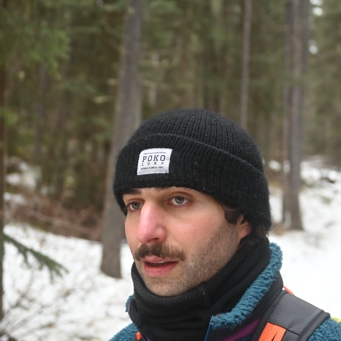

|
Alex Ayoub
I am a Research Scientist at
Google DeepMind in London,
where I work on the science of reinforcement learning and post-training team.
My research focuses on reinforcement learning theory, efficient reasoning in language models,
and decision-focused machine learning systems.
Before joining Google DeepMind full-time, I was a PhD candidate in Computing Science at the
University of Alberta,
advised by the great Csaba Szepesvari and the great Dale Schuurmans.
Email /
CV /
Scholar /
LinkedIn /
GitHub
|

|
Research
I work on reinforcement learning and post-training, with a focus on efficient reasoning in language models
and theory-driven algorithm design. My broader work includes sample-efficient reinforcement learning with
function approximation and objective design for recommender systems.
|
|
NeurIPS 2026
|
Revisiting Subgradient Dominance in Robust MDPs: Counterexamples, Hardness, and Sufficient Conditions
T. Kitamura, A. Ghosh, A. Ayoub, T. D. Chu, C. Szepesvari
NeurIPS, 2026
|
|
ICLR 2026
|
Learning to Reason Efficiently with Discounted Reinforcement Learning
A. Ayoub, K. Asadi, D. Schuurmans, C. Szepesvari, K. Bouyarmane
ICLR, 2026
|
|
NeurIPS 2025
|
Eluder Dimension: Localise It!
A. Bakhtiari*, A. Ayoub*, S. Robertson, D. Janz, C. Szepesvari
NeurIPS, 2025 (Spotlight, top 3%)
|
|
RLC 2025
|
Rectifying Regression in Reinforcement Learning
A. Ayoub*, D. Szepesvari*, A. Bakhtiari, C. Szepesvari, D. Schuurmans
Reinforcement Learning Conference, 2025
|
|
WWW 2025
|
Does Weighting Improve Matrix Factorization for Recommender Systems?
A. Ayoub, S. Robertson, D. Liang, H. Steck, N. Kallus
The Web Conference, 2025
|
|
NeurIPS 2024
|
Almost Free: Self-Concordance in Natural Exponential Families and an Application to Bandits
S. Liu*, A. Ayoub*, F. Sentenac, X. Tan, C. Szepesvari
NeurIPS, 2024
|
|
RLC 2024
|
Mitigating the Curse of Horizon in Monte-Carlo Returns
A. Ayoub, D. Szepesvari, F. Zanini, B. Chan, D. Gupta, B. Castro da Silva, D. Schuurmans
Reinforcement Learning Conference, 2024
|
|
ICML 2024
|
Switching the Loss Reduces the Cost in Batch Reinforcement Learning
A. Ayoub, K. Wang, V. Liu, S. Robertson, J. McInerney, D. Liang, N. Kallus, C. Szepesvari
ICML, 2024
|
|
AISTATS 2024
|
Exploration via Linearly Perturbed Loss Minimisation
D. Janz*, S. Liu*, A. Ayoub*, C. Szepesvari
AISTATS, 2024 (Oral, top 1%)
|
|
NeurIPS 2023
|
Managing Temporal Resolution in Continuous Value Estimation: A Fundamental Trade-off
Z. Zhang, J. Kirschner, J. Zhang, F. Zanini, A. Ayoub, D. Schuurmans
NeurIPS, 2023
|
|
TMLR 2023
|
Resmax: An Alternative Soft-Greedy Operator for Reinforcement Learning
E. Miahi, R. MacQueen, A. Ayoub, A. Masoumzadeh, M. White
Transactions on Machine Learning Research, 2023
|
|
ICML 2021
|
Randomized Exploration for Reinforcement Learning with General Value Function Approximation
H. Ishfaq*, Q. Cui*, V. Nguyen*, A. Ayoub*, Z. Yang, Z. Wang, D. Precup, L. F. Yang
ICML, 2021
|
|
ICML 2020
|
Model-Based Reinforcement Learning with Value-Targeted Regression
A. Ayoub, Z. Jia, C. Szepesvari, M. Wang, L. Yang
ICML, 2020
|
Professional Experience
Google DeepMind, Research Scientist - Science of Reinforcement Learning and Post-Training (London, UK), 2026-Present
Google DeepMind, Student Researcher - Frontier AI Unit (London, UK), Aug 2025-2026
|
Education
University of Alberta, PhD in Computing Science, Sep 2021-May 2027 (Expected)
Supervisors: Csaba Szepesvari and Dale Schuurmans
University of Alberta, MSc in Computing Science, Sep 2019-Sep 2021
Thesis: Towards Sample Efficient Reinforcement Learning with Function Approximation (nominated for Outstanding Thesis Award)
Florida State University, BSc in Computational Science and Applied Mathematics, Jun 2015-May 2019
|
Service, Awards, and Skills
Awards and Service: Inaugural Netflix Graduate Research Fellowship; Co-organizer, RL Theory Workshop (2023, 2024); Workflow Chair, ICML 2022; University of Alberta Graduate Research Assistant Fellowship; Florida State University Research Assistant Grant; FSU President's List (2018).
Technical Skills: Python, C/C++, MATLAB, PyTorch, JAX, CuPy, Mathematica.
Teaching: Teaching Assistant, University of Alberta (Sep 2019-Present).
|
|